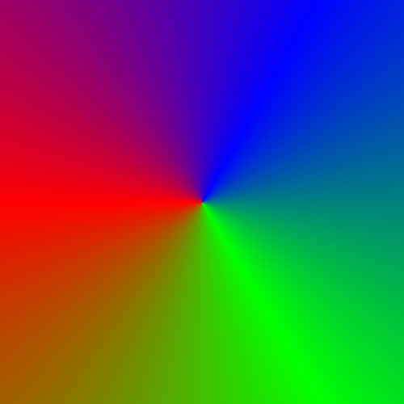

I’ll refer to functions that take complex numbers and return complex numbers as complex functions. These are hard to graph, since they essentially take two variables (the real part and the imaginary part of a complex number) and return two variables (the real part and the imaginary part of a complex number). So, the most straightforward way to graph them would be four dimensional.
We can graph the real part and the imaginary part separately, but these are often related in subtle ways, as I’ll show shortly.
One common way these functions can be defined is called domain coloring. We write the complex number in polar form \((re^{i\theta } = r\cos (\theta ) + ir\sin (\theta ))\), and assign a color to every value of \(\theta \). We then graph the complex plane, assigning every point \(z\) the color \(f(z)\) represents. The following image graphs \(f(z) = z\), and we can see that \(\theta = 0\) is is assigned a color halfway between blue and green, \(\theta = \frac {\pi }{3}\) is blue, \(\theta = \pi \) is red.

The reason it’s a color wheel and not something like a gradient is because the colors can be the same value at \(0\) and \(2\pi \), so similar values of \(\theta \) are always similar colors.
Also, any information about \(r\) is not represented in this image, so sometimes contour lines are added. The image below colors a pixel black if \(|f(z)|\) is close to a whole number, resulting in contour lines, similar to topographical maps. The gradient also goes from red to white from \(-\pi \) to \(\pi \) to illustrate the previous point.
Complex functions have a notion similar to differentiability in real numbers – a complex function is said to be holomorphic if the following limit exists:
\[f'(z) = \lim _{h \to 0} \frac {f(z+h) - f(z)}{h}\]
Here, \(h\) is a complex number, and the limit is defined as follows:
\[\lim _{z \to a}f(z) = L \text { means that for all } \epsilon > 0 \text {, there exists a } \delta \text { such that } |z - a| < \delta \text { implies } |f(z) - L| < \epsilon \]
And \(|z|\) here is defined as \(|a+bi| = \sqrt {a^2+b^2}\).
This is exactly the same way something like \(\lim _{(x,y) \to (a,b)} f(x,y)\) would be defined.